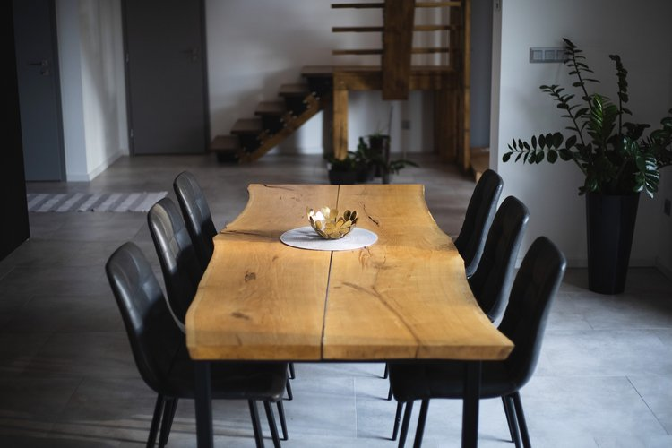

Dubový jedálenský stôl
Pri tomto jedálenskom stole sme sa rozhodli priznať spoj dvoch kusov platní a zároveň nechať priznané kraje dreva. Celý stôl je robený na prirodzený dizajn, bez vyplnenia prasklín epoxidovou živicou a aj tým získal svoj unikátny vzhľad.
Materiál: Dub
Povrchová úprava: Laková lazúra bezfarebná
Typ nábytku: Jedálenský stôl 220 x 75/85 cm
Konštrukcia: Kovová